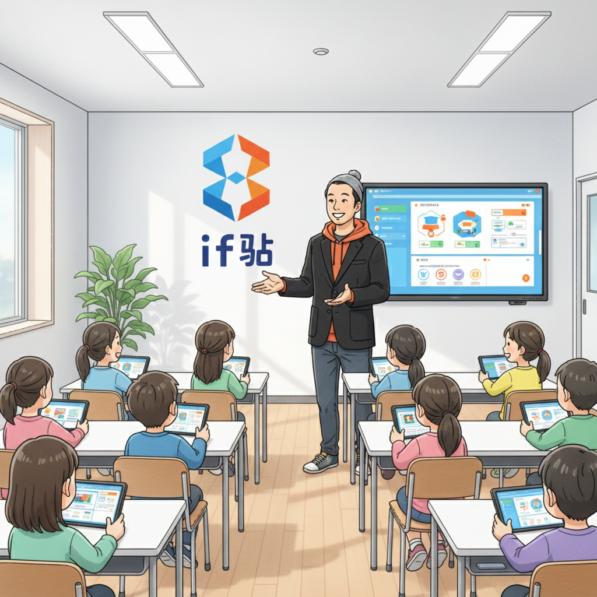
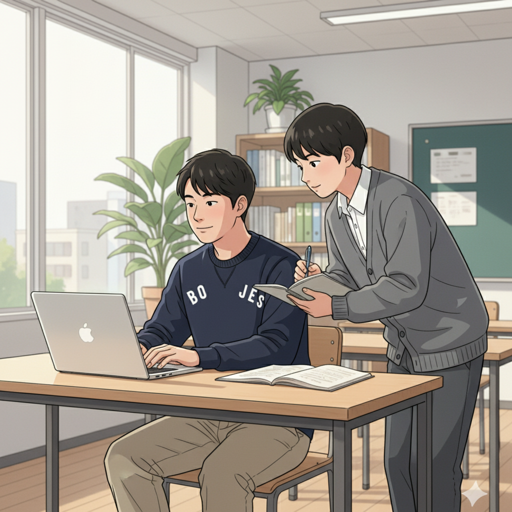
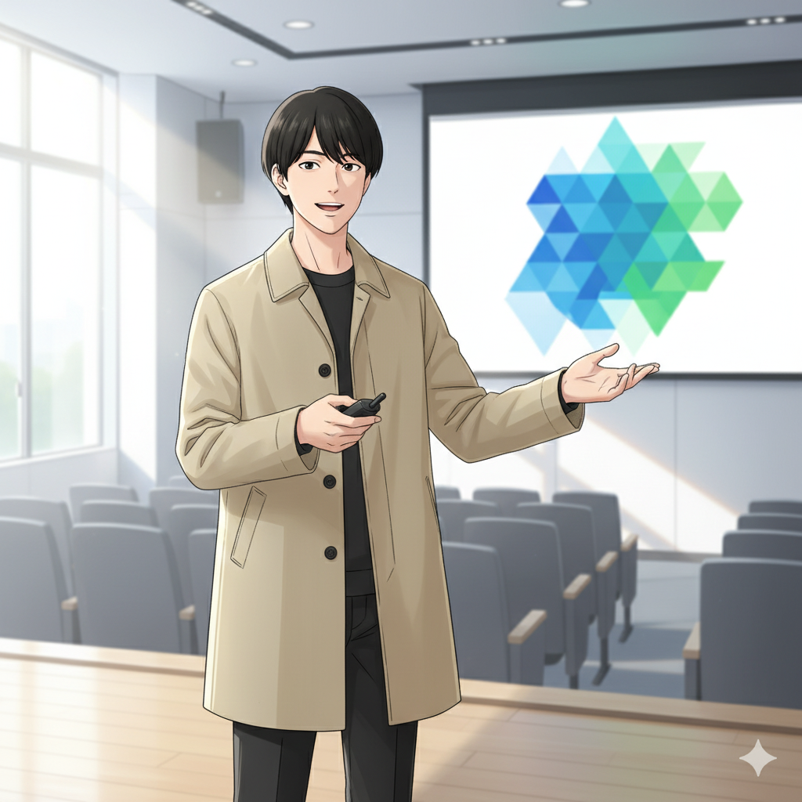
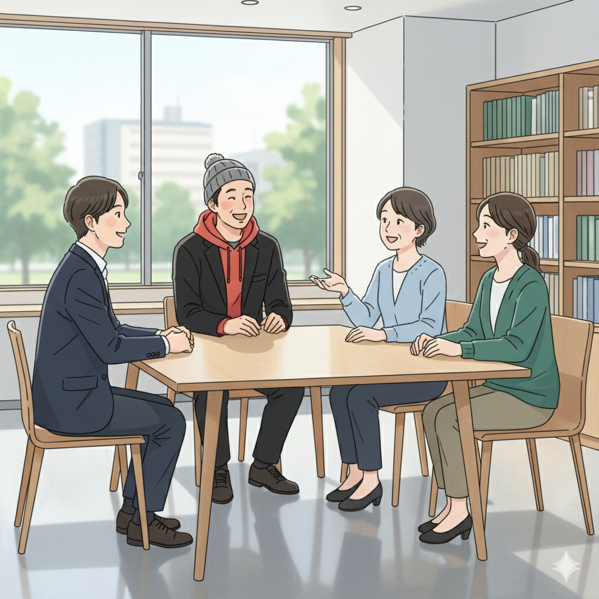

「苦手」の裏に眠る「才能」を見つけよう（塾頭）

みんな、こんにちは！if塾の塾頭です。学校の勉強や生活で「なんだかうまくいかないな…」って感じること、あるよね。もしかしたらそれは、君の持っている特別な才能が、まだ見つかっていないだけかもしれないんだ。
発達特性って、周りの人とはちょっと違う考え方や感じ方をすること。でもね、それは決して「障害」なんかじゃない。むしろ、他の人にはない、君だけのユニークな視点や、とてつもない集中力を生み出す、大切な「才能の原石」なんだ。
if塾では、その原石を見つけ、磨き上げ、君だけの輝きに変えるお手伝いをしたいと思っています。if塾では、発達障害を持つ生徒さんの特性を理解し、AIやICTを駆使して、それぞれの個性を最大限に引き出す教育を提供しています。
例えば、集中力がすごすぎて、授業中に他のことが気になっちゃう子。それはもしかしたら、プログラミングやデザインの世界で、誰よりも深く、素晴らしいものを作り出す力になるかもしれない。不器用で、細かい作業が苦手な子。それはもしかしたら、全体を俯瞰して、誰も思いつかないような斬新なアイデアを生み出す力になるかもしれない。
大切なのは、自分の「苦手」を克服しようと無理をするのではなく、その裏に隠された「才能」を見つけ、それを伸ばしていくこと。if塾で、君だけの才能を見つけ、開花させよう！
成功体験が自信に繋がる！塾長の実体験（塾長）

こんにちは！塾長の山﨑です。実は僕も、ADHDとASDの診断を受けていて、中学時代は特別支援学級に通っていました。正直、当時は「自分はダメなんじゃないか…」って、すごく不安だったんです。
でも、高校生の時に塾頭に出会い、if塾に通うようになって、人生が変わりました。塾頭は、僕の特性を「個性」として認めてくれ、得意なことを伸ばすためのサポートをしてくれたんです。最初は小さなことでも、成功体験を積み重ねるうちに、だんだん自信がついてきて、最終的には国立大学に進学することができました。
僕自身の経験から言えるのは、小さな成功体験の積み重ねが、自信につながるということ。if塾では、一人ひとりのペースに合わせて、無理なく、楽しく学べる環境を提供しています。例えば、プログラミングに興味がある生徒には、ゲームを作ったり、Webサイトを作ったりするプロジェクトに挑戦してもらったり、絵を描くのが好きな生徒には、デジタルイラストのスキルを磨いたりするサポートをしています。
「自分には何もできない…」って思っている君も、if塾でなら、きっと何かが見つかるはず。僕がそうだったように、君もきっと、自分の可能性を信じられるようになるはずです。
「好き」を仕事に！学生起業家の挑戦（学生起業家）

どうも！学生起業家の加賀屋です。僕は高校生の時に塾頭に出会い、15歳で個人事業主として起業しました。小さい頃から、周りの人とは違う視点を持っていることに気づいていましたが、それをどう活かせばいいのかわからなかったんです。
塾頭は、僕の特性を「ビジネスのチャンス」として捉え、それを活かすためのアドバイスをくれました。例えば、僕は細かい数字を見るのが苦手なのですが、その代わりに、斬新なアイデアを思いつくのが得意なんです。そこで、Webデザインの事業を始めたのですが、デザインだけでなく、企画やマーケティングにも積極的に関わることで、自分の強みを最大限に活かすことができました。
発達特性は「障害」ではなく「才能」になりうる。それは、僕自身が身をもって体験したことです。if塾では、君の「好き」を仕事にするためのサポートもしています。例えば、eスポーツが好きなY君は、プロのeスポーツプレイヤーを目指して、塾頭と一緒に練習方法や戦略を研究しています。CTOの井上は、幼い頃からプログラミングに没頭し、その知識とスキルを活かして、if塾のICT教材の開発をしています。
君の「好き」は、きっと誰かの役に立つはず。if塾で、その「好き」を磨き上げ、社会に貢献できる人になろう！
仲間との出会いが人生を変える（塾頭）

if塾には、様々な個性を持った仲間たちが集まっています。eスポーツに夢中な子、プログラミングが大好きな子、絵を描くのが得意な子、文章を書くのが好きな子… みんな、自分の「好き」を追求し、互いに刺激し合いながら成長しています。
仲間との出会いが人生を変える。それは、if塾に通う生徒たちが口を揃えて言うことです。周りの人に理解してもらえなかった悩みも、if塾の仲間となら共有できる。一人では難しかったことでも、仲間と協力すれば乗り越えられる。if塾は、そんな温かいコミュニティです。
if塾で、君もかけがえのない仲間を見つけよう！そして、仲間と共に、自分らしい成長の形を見つけてください。if塾は、君の可能性を信じ、全力でサポートします。ASDや発達障害を持つお子様の才能開花を、AIとICTで支援します。
一歩踏み出す勇気を持って、if塾の扉を叩いてみてください。君の人生が、きっと輝き始めるはずです。
🎯 興味を持っていただいた方へ
if塾では、発達特性を持つ子どもたちの「好き」を「才能」に変える教育を行っています。現在の記事内容と実際の活動に大きなズレはありませんが、詳細については直接お問い合わせください。
📌 記事について
この記事は、塾頭による完全自動化への挑戦としてAIが自動生成しています。将来的には塾頭が執筆しているような記事になることを目指しており、現時点では事実と異なる内容が含まれる可能性があります。最新の正確な情報については、お問い合わせフォームよりご確認ください。
🤖 Generated with AI - if塾のブログ自動化プロジェクト